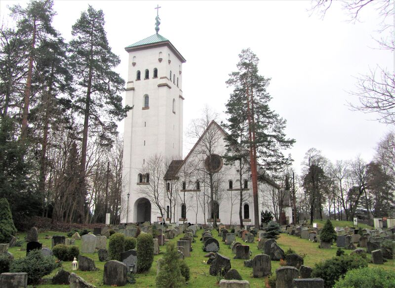
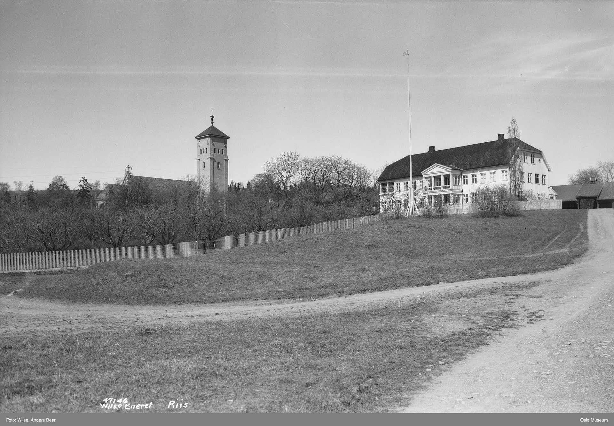
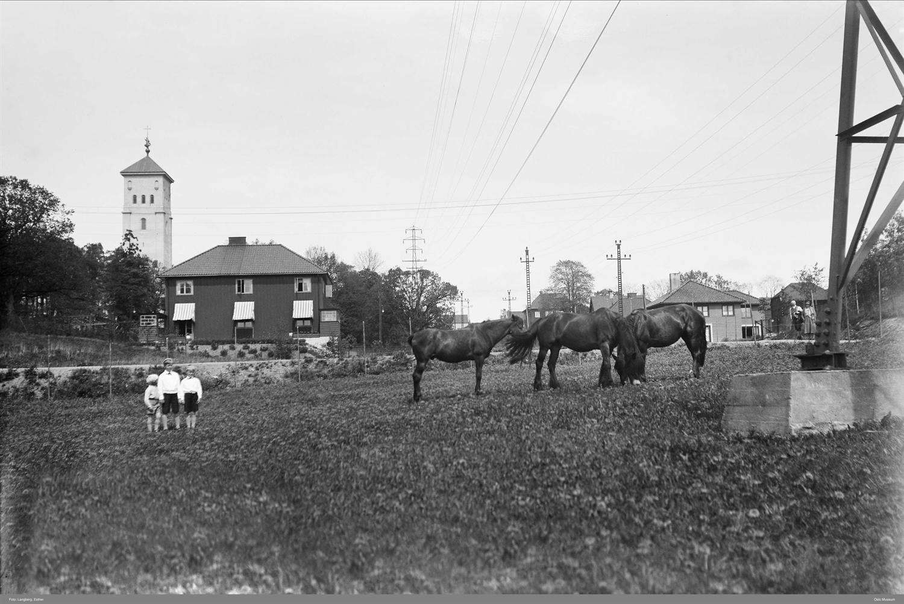
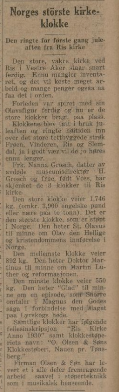
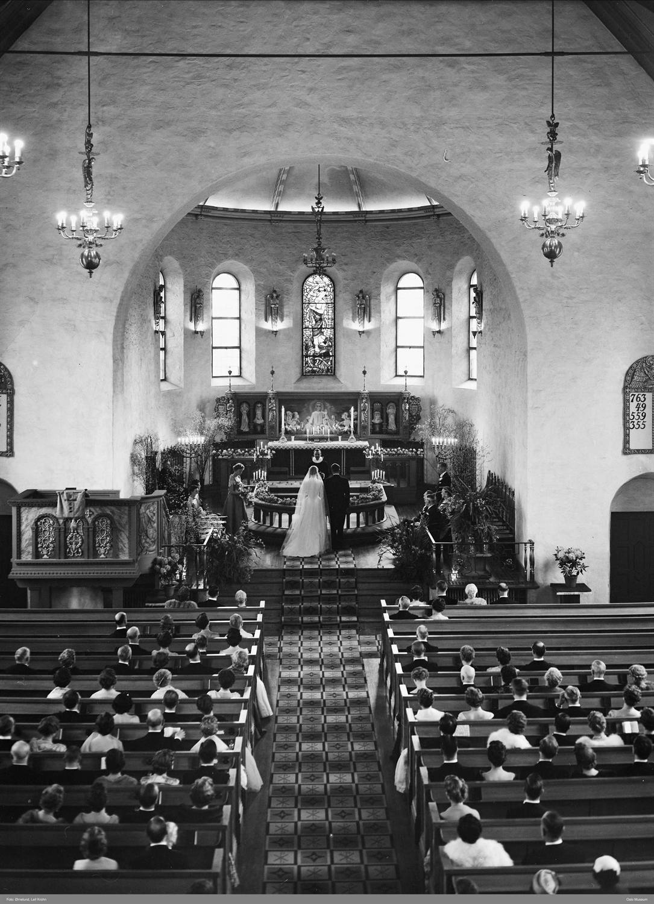

Englekirken på Ris
«Янгольська церква» на Ris
The Angel Church at Ris
Presis klokken elleve, søndag 12. juni 1932, gikk kong Haakon VII inn gjennom dørene til en helt ny kirke i betong oppe på Ris. Det store kirkeskipet var fylt til siste plass, og da organisten lot Bachs Preludium og fuge i C-dur runge under hvelvet, sto en av landets største kirkeklokker klar i tårnet. Folk kalte den snart bare «Englekirken» – etter alle englefigurene på altertavla.

Hvorfor «Englekirken»?
Tilnavnet kommer fra altertavla Kristus og de små barn, som Hugo Lous Mohr malte til kirken i 1932, med englefigurer formet sammen med billedhuggeren Arthur Gustavson. Over koret henger en Kristusfigur av billedhuggeren Sigri Welhaven, og glassmaleriene er laget av Per Vigeland. Til sammen ga utsmykningen kirken et så englerikt preg at navnet festet seg i folkemunne. Den opprinnelige skrivemåten var forresten «Riis kirke» – med to i-er.
En kirke i betong, vendt mot sør
Ris kirke er en langkirke i nyromansk stil, men selve byggematerialet var moderne for sin tid: den er støpt i betong, med fasader av rappet tegl og saltak tekket med skifer. Det høye, sidestilte tårnet har et lavt pyramidetak. Det meste av kirker i Norge ligger orientert vest–øst, men på grunn av formen på tomta ble Ris kirke i stedet liggende nord–sør, med koret mot sør. Arkitekt var Carl Berner, som sammen med Jørgen Berner sto bak det opprinnelige utkastet. Kirken hadde først plass til rundt 750 mennesker; etter at noen benker bakerst i skipet og på galleriet er fjernet, rommer den i dag omkring 500. Ved siden av ligger et frittliggende menighetshus, oppført samtidig med kirken og utvidet i 1987 (arkitekt Einar Dahle), og Ris kirkegård – i dag Ris urnelund.

Den lange veien til innvielse
Tomta kom på plass alt i 1919, da Vestre Akers sognestyre kjøpte 36 mål av Riis gård. I 1921 ble Berner-utkastet lagt til grunn, og året etter ble det satt ned en kirkekomité. Men økonomien strammet til, planene måtte forenkles, og byggingen dro ut. Grunnarbeidet kom i gang i 1926, grunnsteinen ble lagt ned 2. desember 1928 – og først 12. juni 1932 kunne Oslos biskop Johan Peter Lunde innvie kirken, med kong Haakon VII til stede. Regnestykket endte på 723 000 kroner, hvorav hele 284 000 kom inn som gaver. En morsom detalj: tårnet er egentlig proporsjonert til et større anlegg som aldri ble noe av. Opprinnelig var det tenkt et menighetshus knyttet til tårnet med solterrasse og overdekket søylegang, men også det måtte vike av økonomiske grunner.


Klokkene og orgelet
Ris kirke har tre kirkeklokker fra 1930, alle med innskriften Riis kirke – Anno 1930. De er tegnet av Carl Berner og levert av Olsen Nauen klokkestøperi ved Tønsberg. Den største veier hele 1746 kilo og er stemt i Diss – på sin tid en av de største klokkene som var støpt i Norge. Den mellomste veier 892 kilo (Fiss), den minste 550 kilo (Ass). Orgelet har sin egen historie: ved åpningen sto et orgel fra J. H. Jørgensen Orgelfabrik, spesialbygd for kirken og regnet som et av orgelbyggeriets hovedverk. Etter mange år med tekniske problemer ville menigheten skifte det ut – men i januar 2006 fredet Riksantikvaren kirken midlertidig nettopp for å sikre det gamle orgelet. I 2007 grep miljøvernministeren inn etter klage fra menigheten og biskopen, og man ble enige om å bevare den gamle orgelfasaden mest mulig mens selve instrumentet ble byttet. I 2011 fikk kirken et nytt, stort orgel i ren fransk-romantisk stil, bygd av Ryde & Berg Orgelbyggeri i Fredrikstad etter modell av Cavaillé-Colls orgler. Blant organistene gjennom årene finner vi store navn som Ludvig Nielsen, Rolf Karlsen, Trond Kverno, Conrad Baden, Grethe Pedersen og Inger Lise Ulsrud.

Olav den Hellige og «Skammens stein»
Øverst på tårnet står Olav den Hellige med skjold, spyd og forgylt kors, utformet av Carl Berner og Arthur Gustavson – synlig på lang lei over byen. På kirkeveggen henger en minneplakett over lokale falne fra andre verdenskrig. På kirkegården står også «Skammens stein», en stor naturstein som på 2000-tallet ble supplert med en plakett. Den markerer en fellesgrav i bruk fra 1965 til 1987 for mennesker som døde på Gaustad sykehus, og knyttes til fortellingen om de av taterne/romanifolket som ble rammet av den norske statens overgrep. Ris kirke er soknekirke for Ris menighet i Vestre Aker prosti, og er listeført som verneverdig etter det såkalte kirkerundskrivet. Adressen er Risbakken 1.
Рівно об одинадцятій, у неділю 12 червня 1932 року, король Haakon VII зайшов крізь двері цілком нової бетонної церкви нагорі на Ris. Великий неф був заповнений до останнього місця, і коли органіст дозволив Прелюдії і фузі до мажор Баха залунати під склепінням, у вежі вже був готовий один з найбільших церковних дзвонів країни. Невдовзі люди стали називати її просто «Янгольською церквою» — за всіма фігурами янголів на вівтарному образі.
Чому «Янгольська церква»?
Прізвисько походить від вівтарного образу Христос і малі діти, який Hugo Lous Mohr написав для церкви у 1932 році, з фігурами янголів, виконаними разом зі скульптором Arthur Gustavson. Над хором висить фігура Христа роботи скульпторки Sigri Welhaven, а вітражі створив Per Vigeland. Разом це оздоблення надало церкві такого «янгольського» вигляду, що назва закріпилася в народі. Початковий же правопис був «Riis kirke» — із двома «i».
Церква з бетону, обернена на південь
Церква Ris — це поздовжня церква в неороманському стилі, але сам будівельний матеріал був сучасним для свого часу: вона відлита з бетону, з фасадами з тинькованої цегли та двосхилим дахом, критим шифером. Висока бокова вежа має низький пірамідальний дах. Більшість церков у Норвегії орієнтовані захід–схід, але через форму ділянки церква Ris натомість лягла північ–південь, із хором на південь. Архітектором був Carl Berner, який разом із Jørgen Berner стояв за первісним проєктом. Спершу церква вміщала близько 750 людей; після того як кілька лав у задній частині нефа й на галереї прибрали, сьогодні вона вміщає близько 500. Поруч стоїть окремий парафіяльний дім, споруджений одночасно з церквою та розширений у 1987 році (архітектор Einar Dahle), і цвинтар Ris — нині урновий гай Ris.
Довгий шлях до освячення
Ділянка з’явилася ще у 1919 році, коли парафіяльна рада Vestre Aker купила 36 молів (близько 3,6 га) садиби Riis gård. У 1921 році в основу поклали проєкт Berner, а наступного року створили церковний комітет. Але економіка ускладнилася, плани довелося спростити, і будівництво затяглося. Земляні роботи розпочалися у 1926 році, наріжний камінь заклали 2 грудня 1928 року — і лише 12 червня 1932 року єпископ Осло Johan Peter Lunde зміг освятити церкву в присутності короля Haakon VII. Підсумок склав 723 000 крон, з яких аж 284 000 надійшли як пожертви. Цікава деталь: вежа насправді пропорційна до більшого комплексу, який так і не звели. Спершу планували парафіяльний дім, з’єднаний із вежею сонячною терасою та критою колонадою, але й від цього довелося відмовитися з економічних причин.
Дзвони й орган
Церква Ris має три церковні дзвони 1930 року, усі з написом Riis kirke – Anno 1930. Їх спроєктував Carl Berner, а виготовила дзвоноливарня Olsen Nauen під Tønsberg. Найбільший важить аж 1746 кілограмів і налаштований у dis — свого часу один із найбільших дзвонів, відлитих у Норвегії. Середній важить 892 кілограми (fis), найменший — 550 кілограмів (as). Орган має власну історію: на відкритті стояв орган від J. H. Jørgensen Orgelfabrik, спеціально збудований для церкви й уважаний одним із головних творів цієї майстерні. Після багатьох років технічних проблем парафія хотіла його замінити — але в січні 2006 року Управління охорони пам’яток (Riksantikvaren) тимчасово взяло церкву під охорону саме заради збереження старого органа. У 2007 році втрутився міністр охорони довкілля після скарги парафії та єпископа, і дійшли згоди зберегти стару фасадну частину органа якомога повніше, замінивши сам інструмент. У 2011 році церква отримала новий великий орган у чистому французько-романтичному стилі, збудований майстернею Ryde & Berg Orgelbyggeri у Fredrikstad за зразком органів Cavaillé-Coll. Серед органістів за ці роки — такі великі імена, як Ludvig Nielsen, Rolf Karlsen, Trond Kverno, Conrad Baden, Grethe Pedersen та Inger Lise Ulsrud.
Святий Олав і «Камінь ганьби»
На вершині вежі стоїть святий Олав зі щитом, списом і позолоченим хрестом, виконаний Carl Berner та Arthur Gustavson — його видно здалеку над містом. На стіні церкви висить меморіальна табличка на честь місцевих загиблих у Другій світовій війні. На цвинтарі також стоїть «Камінь ганьби» (Skammens stein) — великий природний камінь, який у 2000-х роках доповнили табличкою. Він позначає спільну могилу, що використовувалася з 1965 до 1987 року для людей, які померли в лікарні Gaustad, і пов’язаний з історією тих представників народу татер/романі, які постраждали від злочинів норвезької держави. Церква Ris є парафіяльною церквою парафії Ris у пробстві Vestre Aker і занесена до переліку охоронюваних згідно з так званим церковним циркуляром. Адреса — Risbakken 1.
At eleven o'clock precisely, on Sunday 12 June 1932, King Haakon VII walked in through the doors of a brand-new concrete church up at Ris. The great nave was filled to the last seat, and as the organist let Bach's Prelude and Fugue in C major ring out beneath the vault, one of the country's largest church bells stood ready in the tower. People soon called it simply “the Angel Church” – after all the angel figures on the altarpiece.
Why “the Angel Church”?
The nickname comes from the altarpiece Christ and the Little Children, which Hugo Lous Mohr painted for the church in 1932, with angel figures shaped together with the sculptor Arthur Gustavson. Above the chancel hangs a figure of Christ by the sculptor Sigri Welhaven, and the stained-glass windows were made by Per Vigeland. Together the decoration gave the church such an angel-rich character that the name stuck in popular speech. The original spelling was, incidentally, “Riis kirke” – with two i's.
A church in concrete, facing south
Ris church is a nave church in Neo-Romanesque style, but the building material itself was modern for its time: it is cast in concrete, with façades of rendered brick and a saddle roof clad in slate. The tall, side-set tower has a low pyramid roof. Most churches in Norway are oriented west–east, but because of the shape of the plot Ris church instead lies north–south, with the chancel facing south. The architect was Carl Berner, who together with Jørgen Berner was behind the original design. The church first had room for around 750 people; after some pews at the back of the nave and on the gallery were removed, it today holds about 500. Beside it lies a detached parish house, built at the same time as the church and extended in 1987 (architect Einar Dahle), and Ris cemetery – today Ris urn grove.
The long road to consecration
The plot was secured as early as 1919, when the Vestre Aker parish council bought 36 mål of Riis farm. In 1921 the Berner design was adopted, and the following year a church committee was set up. But the finances tightened, the plans had to be simplified, and the building dragged on. Groundwork started in 1926, the foundation stone was laid on 2 December 1928 – and it was not until 12 June 1932 that Oslo's bishop Johan Peter Lunde could consecrate the church, with King Haakon VII present. The final bill came to 723,000 kroner, of which as much as 284,000 came in as gifts. An amusing detail: the tower is actually proportioned to a larger complex that never came to be. Originally a parish house was envisaged, connected to the tower by a sun terrace and a covered colonnade, but that too had to give way for financial reasons.
The bells and the organ
Ris church has three church bells from 1930, all with the inscription Riis kirke – Anno 1930. They were designed by Carl Berner and supplied by the Olsen Nauen bell foundry near Tønsberg. The largest weighs as much as 1,746 kilos and is tuned to D sharp – at the time one of the largest bells ever cast in Norway. The middle one weighs 892 kilos (F sharp), the smallest 550 kilos (A flat). The organ has a history of its own: at the opening there stood an organ from J. H. Jørgensen Orgelfabrik, specially built for the church and regarded as one of the workshop's principal works. After many years of technical problems the congregation wanted to replace it – but in January 2006 the Directorate for Cultural Heritage (Riksantikvaren) temporarily protected the church precisely to safeguard the old organ. In 2007 the minister of the environment intervened after a complaint from the congregation and the bishop, and it was agreed to preserve the old organ façade as far as possible while the instrument itself was replaced. In 2011 the church got a new, large organ in pure French Romantic style, built by Ryde & Berg Orgelbyggeri in Fredrikstad after the model of Cavaillé-Coll's organs. Among the organists over the years are great names such as Ludvig Nielsen, Rolf Karlsen, Trond Kverno, Conrad Baden, Grethe Pedersen and Inger Lise Ulsrud.
Saint Olav and the “Stone of Shame”
At the very top of the tower stands Saint Olav with shield, spear and a gilded cross, designed by Carl Berner and Arthur Gustavson – visible from far across the city. On the church wall hangs a memorial plaque to local people who fell in the Second World War. In the churchyard also stands the “Stone of Shame” (Skammens stein), a large natural stone that in the 2000s was supplemented with a plaque. It marks a communal grave in use from 1965 to 1987 for people who died at Gaustad hospital, and is linked to the story of those of the Tater/Romani people who were subjected to the Norwegian state's abuses. Ris church is the parish church for Ris parish in the Vestre Aker deanery, and is listed as worthy of preservation under the so-called church circular. The address is Risbakken 1.
Kilder
Her er du
Slik blir du med på jakten
Finn stolpene rundt om i Vestre Aker, skann QR-koden og les historien om hvert sted. Velg et kallenavn – så samler du poeng for hvert nye sted du besøker. Ingen innlogging, ingen app.
Se kart og kom i gang